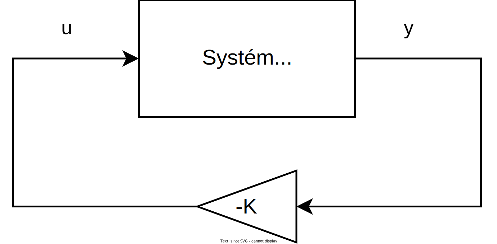

Výstupní zpětná vazba
Uvažujme lineární systém ve tvaru
\[\begin{aligned} \bm{ẋ} &= \bm{A} \bm{x} + \bm{B} \bm{u} \\ \bm{y} &= \bm{C} \bm{x} \end{aligned}\]
kde
- $\bm{x}$ vektor stavů
- $\bm{u}$ vektor vstupů
- $\bm{y}$ vektor výstupů
Lineární zpětnou vazbu lze zavést jako
\[\bm{u} = - \bm{K}\bm{y}\]
přičemž výsledný stavový popis systému lze upravit do tvaru
\[\bm{ẋ} = (\bm{A} - \bm{B}\bm{K}\bm{C}) \bm{x}\]
